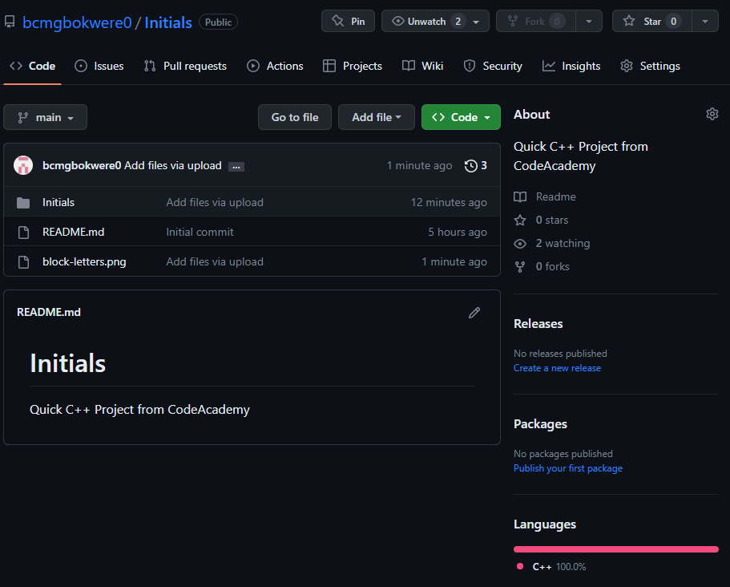
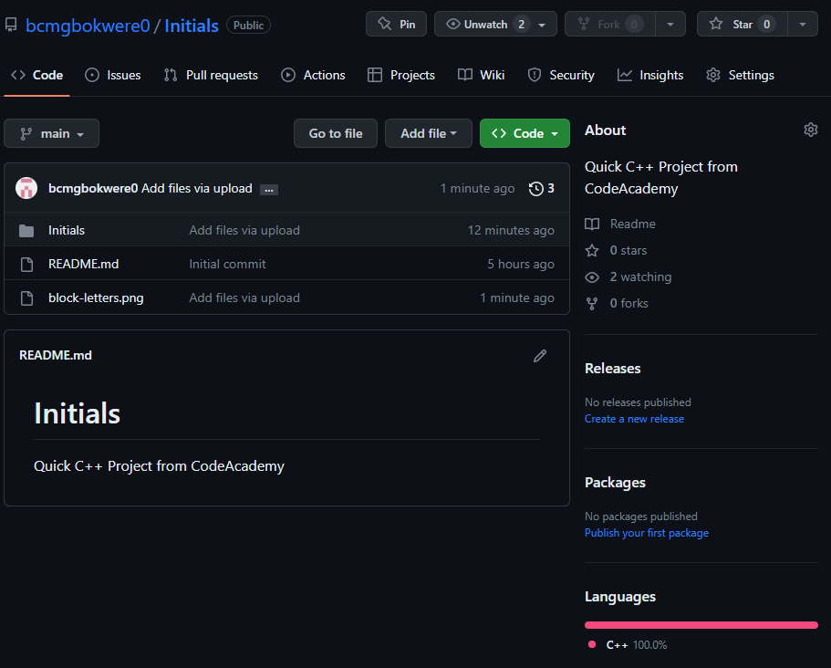
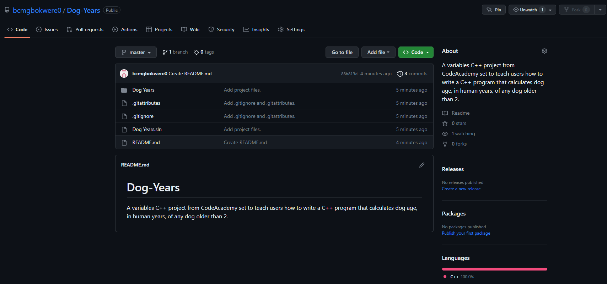

Initials Project
A quick Hello World project for text outputs in C++ Code. In my project, I simply spelled out my initials using block letters. Learned skill of outputting text in C++.
I am a graduate from Northern Illinois University, where I earned my Bachelor of Science in Health Sciences. My studies focused on environmental health, physical and mental health, and how to best deliver care to underserved communities. Studying throughout the pandemic revealed a host of challenges present within our healthcare system, challenges that were met with solutions from myself and my peers. Outside of Health, I have always loved working with computers. I am happy to finally be pursuing education and knowledge on the coding side of computers as I have always wanted to play a role in software development. Looking forward specifically to Java and Javascript within WeCanCodeIT, and also have interest in learning C++, Python, and .NET on my own.
 bcmgbokwere@gmail.com
bcmgbokwere@gmail.com Brianmgbokwere0
Brianmgbokwere0
A quick Hello World project for text outputs in C++ Code. In my project, I simply spelled out my initials using block letters. Learned skill of outputting text in C++.
My first project within C++! This project specifically tests outputs using the "Who Wants to Be a Millionaire" format. In this project, integers were set, text outputs on multiple new lines were made, and question was asked with code that allows people to respond. Correct response earns points. WIP

A variables C++ project from CodeAcademy set to teach users how to write a C++ program that calculates dog age, in human years, of any dog older than 2. Required skills with variables.
